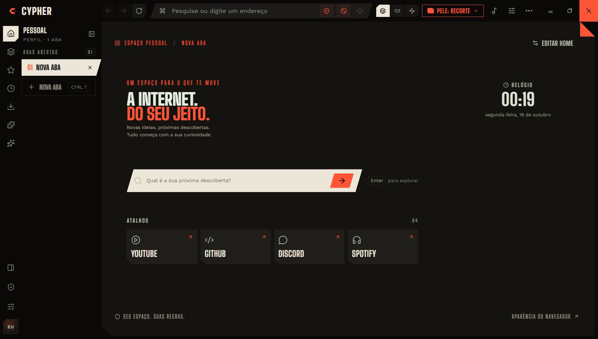

Anúncios e rastreadores
Mais de 110 mil regras do EasyList e do EasyPrivacy, aplicadas antes de a página carregar.
O Cypher bloqueia anúncios e rastreadores, esconde a impressão digital do seu computador, abre sites pelo Tor e pelo I2P, roda as extensões do Chrome e deixa você remontar a interface inteira.

Nada de configurar vinte coisas antes de navegar. As proteções já vêm ativas e não mandam o seu histórico para ninguém.
Mais de 110 mil regras do EasyList e do EasyPrivacy, aplicadas antes de a página carregar.
Canvas, áudio e placa de vídeo mudam de site para site. Quem tenta reconhecer seu computador perde o rastro.
Abra uma aba pela rede Tor ou I2P com um clique, ou mande um site sempre por uma rota anônima.
Avisos de golpe e malware pelo Google Safe Browsing, comparando pedaços de hash numa lista local.
Tenta sempre a versão segura e avisa antes de abrir uma página sem criptografia.
Cofre criptografado pelo sistema, aviso de senhas vazadas e importação do Chrome, Edge, Firefox e Bitwarden.
Ferramentas que os outros navegadores escondem ou nem têm.
Instale direto da Chrome Web Store. Botões, popups, menus e abas funcionam como no Chrome, com suporte às APIs de abas, ações e menus.
Um mod troca cores, pele, fontes, papel de parede, sons, música reativa e até o visual dos sites. Crie o seu dentro do navegador e publique no catálogo assinado para todo mundo usar.
Recorte, com cortes e tipografia condensada, ou Clássico, com cantos suaves. Ou faça a sua.
Cliques, abas e digitação com som, e uma trilha que reage ao que você faz.
CSS por site e filtros de página: CRT, noir, sépia, neon.
Mande a pasta do mod num pull request. Depois da revisão, ele entra na loja com assinatura.
Todo o código está no GitHub sob a GPL-3.0. Você pode ler, auditar, modificar e redistribuir. As atualizações são assinadas e conferidas antes de instalar.
Escolha o seu sistema. O Cypher se atualiza sozinho no Windows; no Linux, ele avisa quando sai uma versão nova.
Versões, notas e arquivos anteriores em GitHub Releases.